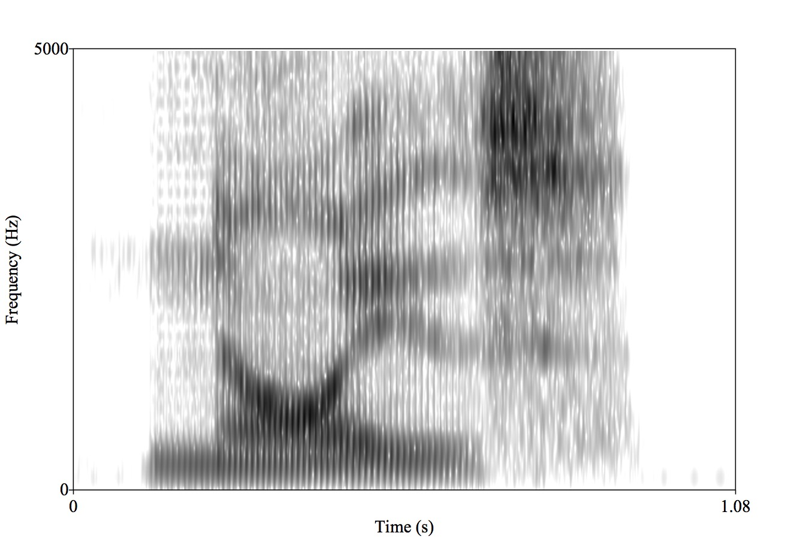
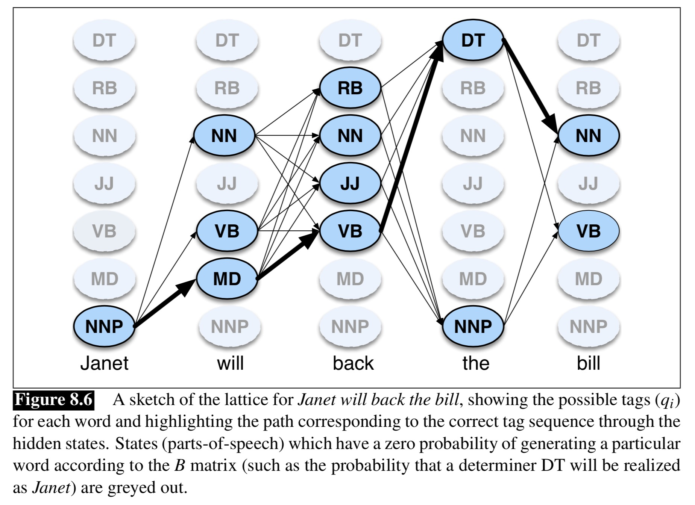

Why teach legacy methods?
Training Data for Legacy ASR
Levels of Granularity
Hidden Markov Models for ASR
Language Models and Hypothesis Testing
Neural Network approaches have won, completely
No high-resource ASR model is being developed as we’re discussing today
The pipeline is actually much simpler now in implementation
This is not how your phone or computer does ASR
Why do we still care?
Popularized by Robert Heinlein’s The Moon is a Harsh Mistress
Turned into the ‘No Free Lunch Theorem’ for Machine Learning by Wolpert and Macready
“Any two optimization algorithms are equivalent when their performance is averaged across all possible problems”
There are improvements made, but you almost always pay elsewhere
They require massively more data to train
They require massively more compute power to run with a reasonable RTF
They often require sending the data to external servers with enough power
Training models is unfeasible for a person using consumer hardware
Neural Network methods win because of money, silicon, and data
Computers are wildly more powerful every year
More data becomes available regularly
Your phone’s processor is several of orders of magnitude more powerful than the first computer I tried ASR on
Often, legacy algorithms aren’t patent or license encumbered anymore
Enough data to build a neural language model may not be available for some languages
You may not have the budget to buy a high-end speech recognition server to train a new model
Hosted top-of-the-line models may require compromises in privacy that you can’t stomach
Neural methods are great, but they’re frustratingly opaque
It’s not currently possible to understand how they work and what they’re doing
Legacy methods are often useful in multiple places!
So, that’s why we’re going to teach them!
To do this, you’ll need…
Audio files
With Metadata
In a reasonable format
In large quantity
Which is similar to your task
In legacy approaches, this was done using MFCCs
Neural approaches, next time!
Resources like CMUDict give you pronunciations
AARDVARK AA1 R D V AA2 R K
AARGH AA1 R G
AARON EH1 R AH0 N
ABACUS AE1 B AH0 K AH0 S
So, we break the sound into frames, process them
We use an acoustic model to assign each frame to a likely linguistic unit
We make guesses about the likely next word using a language model
We combine that together to make a series of text guesses
Wait… what’s a ‘linguistic unit’??

“Noise”
Handles larger patterns of coarticulation
Captures word specific effects
Robust to short duration noise
Word annotation is way cheaper
What about novel words?
Training data becomes much more sparse
Can we really learn nothing about “boy” from “soy”?
You could use the orthography itself as the ‘pronunciation dictionary’ and recognize letters (‘graphemes’)
Mapping straight from letters to speech signal
This is actually happening now!
The data are much easier to get
More able to handle new words and names
You don’t need dictionaries to map from words to phones!
Grapheme-to-phone conversion is very language specific
It’s often roughly and thoroughly arbitrary
Some languages’ writing systems have less mutual information with spoken language
It throws away data for many homograph differences (e.g. record, villa, does)

The most basic unit, so training data is rich
Can (theoretically) work for any language
Can still capture unknown words
Annotation is brutally expensive
Coarticulation is problematic
Phone-level recognition is overkill for many contexts

As do many others
Triphones are often a possibility
This is absolutely wild
Now, let’s talk about how legacy systems identified phonemes
Learn the relationship between phonemes (e.g.) and MFCCs
Learn the likelihood of phonemes, and of sequences
Predict a sequence of phonemes based on the acoustic model
Predict the sequence of words based on a language model
Consider both acoustic and language models to make the most probable guess
A machine learning process which models a series of observations, with the assumption that there’s some ‘hidden’ state which helps to predict the observations
The probability of the current state is based ONLY on the previous state
The model does not have long term ‘memory’
The model cannot look ahead
This is a left-to-right walk through the data
Observations: The series of words in the text
States: The parts of speech of those words
‘Look at the sequence of words, to help predict which part of speech corresponds to this word’
Observations: The series of frames, MFCC’ed
States: The linguistic units (e.g. phonemes, diphones) that they correspond to
‘Look at the sequence of acoustic frames, to help predict which phoneme it’s representing’
Observation probability: The probability that a frame has a given tag
Transition Probability: The probability of one phoneme, given the prior one
Count the number of instances of each phoneme in the corpus to get absolute frequency
Examine the MFCCs corresponding to each phonemes
Do blackboxy statistics (involving Gaussian mixture models) to link MFCC characteristics to phonemes
… and so on …
Observation probability gives us the link between the MFCC’ed acoustics and phonemes
Count the number of instances of /s/ in the corpus
Count the number of times /s/ follows /i/
Count the number of times /s/ follows /u/
Count the number of times /s/ follows /ð/
… and so on …
Transition probabilities gives us phonotactics, and how likely a given chain of sounds is
(OK, we skipped some steps, but Quarter System)
How do we use it for recognition?
“Given this sequence of MFCCs, what’s the most likely sequence of phonemes”
This uses the Viterbi Algorithm and Beam Search
We know the probability of a given state (phoneme) given each MFCC
We know the probability of a given state (phoneme) given the prior state (phoneme)
We can calculate the most probable state for each phoneme in light of those two facts
What is the most likely string of states that gets us through the entire sentence?

/s p æ m z/ == ‘spams’
/ʃ p æ n z/ == N/A
/s p æ n z/ == ‘spans’
… but we can do better than this!
Thanks, LIGN 165/167!
This gives us a representation of how likely one word is given the next
We can ‘predict’ the next word based on the prior words
We can mix the language model probabilities with the acoustic model probabilities
is
was
over
to
connects
leads
spans
We know that /ʃ p æ n z/ isn’t likely to be a word
We know that ‘The bridge spams’ is highly improbable
We have a Hypothesis!
Custom Dictionaries
Address books
Local Context (e.g. for maps)
Song lists

You can try to decode frame-by-frame, but you get less value from the LM
You can try to decode by word, but this causes a loss of context information
You can decode by utterance, but this takes longer and introduces lag!
“The bridge spans the river!”
Now we look at the next chunk, and repeat the process!
Learn the relationship between phonemes (e.g.) and MFCCs
Learn the likelihood of phonemes, and of sequences
Predict a sequence of phonemes based on the acoustic model
Predict the sequence of words based on a language model
Consider both acoustic and language models to make the most probable guess
Up until the Mid 2010s, nearly every ASR model was HMM based
When Google Voice left HMMs for Neural Networks, accuracy went up by 49%
The neural networks would soon take over!
Legacy Methods are often less computationally and data intensive
ASR methods need audio, transcripts, and a good language model
We can recognize phones, diphones, or even triphones
Hidden Markov Models worked well for ASR for a long time!
The most probable output is the one where the acoustics and language model agree